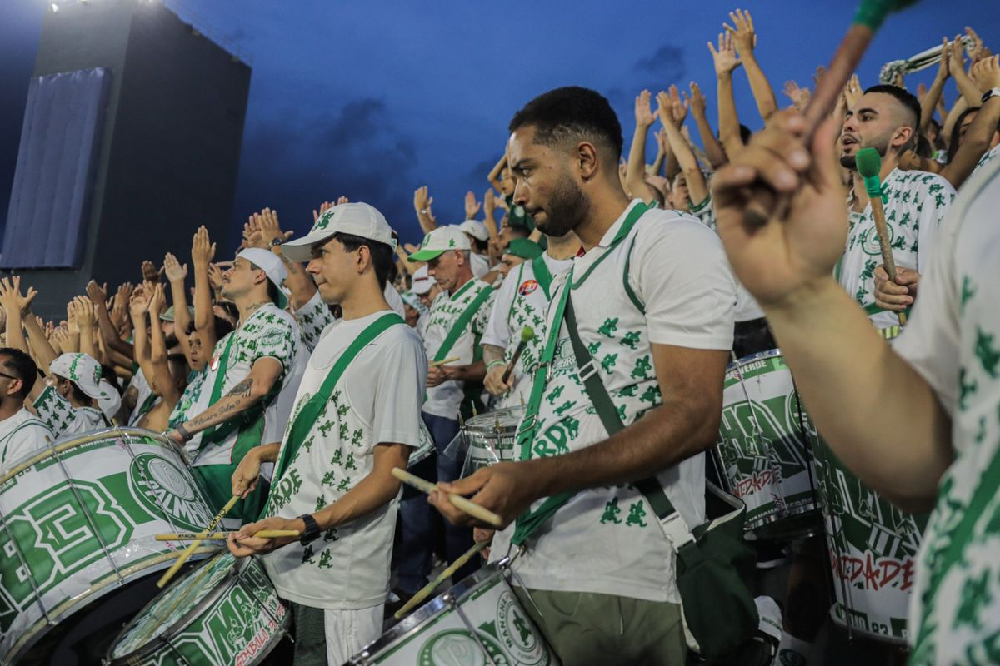
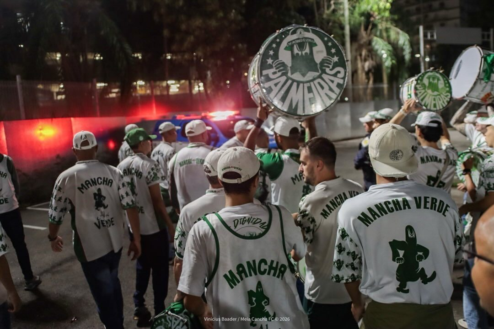
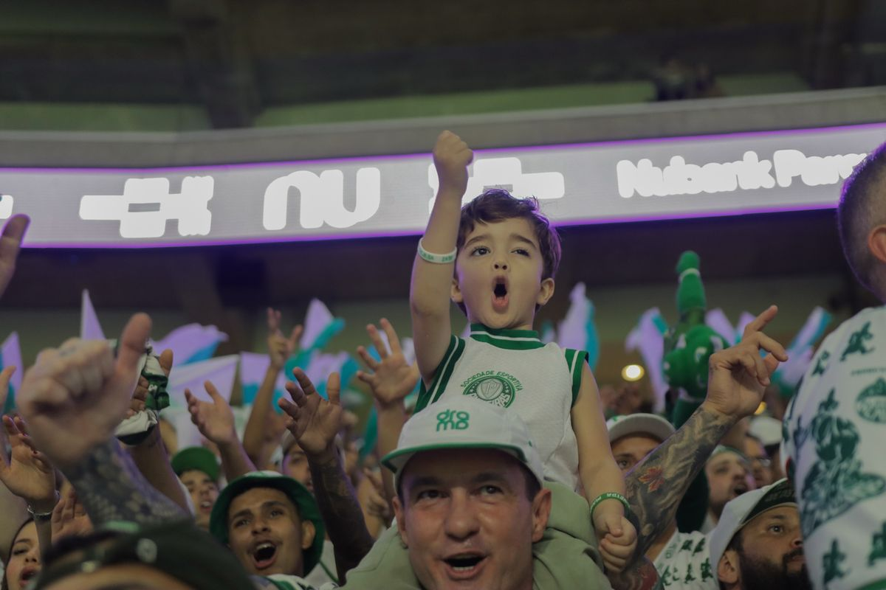
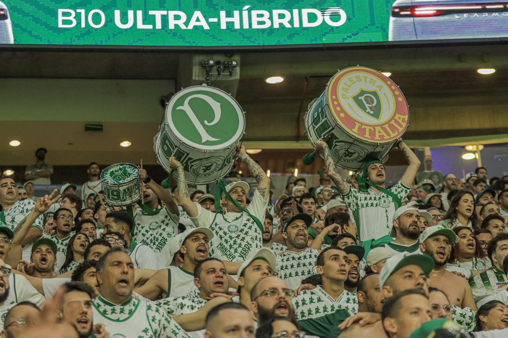

Aqui se aprende
a amar o Palmeiras
Camisa, boné e acessório de quem tá na arquibancada desde 1983.
Ver o que mais saiFotos da arquibancada
Veste igual quem tá lá

Igual a bateriaAs camisas que a arquibancada veste.Ver camisas
Pra caravanaChuva, frio e estrada? Vai de capa e jaqueta.Ver jaquetas
A molecadaJá nasce Mancha. Do bebê ao moleque.Ver infantil
Seja sócioFica sócio pelo App MV. É rapidinho.Quero ser sócioO carro-chefe
Linha Tradicional

Corredor Alviverde
Não é só torcer.
É fazer parte.
Fica sócio da Mancha pelo App MV e ajuda a botar a festa na rua.
Só o que tem no estoque
O que mais sai

1983
Futebol, União
& Samba
Aqui se aprende a amar o Palmeiras. Cada peça dessa loja é da Mancha, pra Mancha: quem veste carrega 43 anos de arquibancada no peito.
Validar o texto com a diretoria.
43anos de história
1 mino Instagram
SPsede na Rua Palestra Itália

Separamos pra você